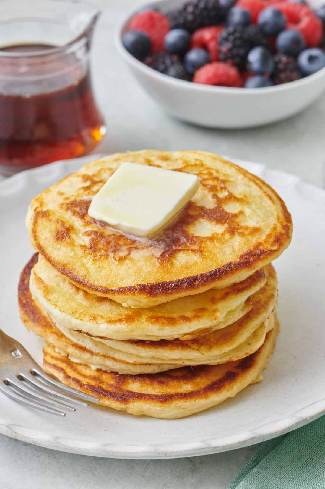

Yoghurt Pancakes

Ingredients
- 1 cup plain yoghurt
- 1 cup all-purpose flour
- 2 tablespoons sugar
- 1 teaspoon baking powder
- 1/2 teaspoon baking soda
- 1/4 teaspoon salt
- 1 large egg
- 2 tablespoons melted butter
- 1/2 teaspoon vanilla extract
- Butter or oil for cooking
Steps
-
In a bowl, mix the yoghurt, egg, melted butter, and vanilla extract.
-
In another bowl, combine the flour, sugar, baking powder, baking soda,
and salt.
-
Gradually add the dry ingredients to the wet ingredients, stirring until
just combined.
-
Heat a non-stick skillet over medium heat and grease with butter or oil.
- Pour 1/4 cup of batter onto the skillet for each pancake.
-
Cook until bubbles form on the surface, then flip and cook until golden
brown.
- Serve warm with your favorite toppings.
Home